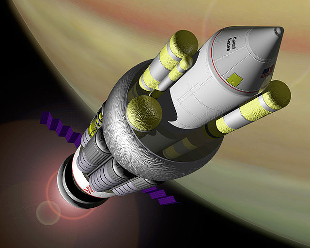

Interstellar arks are a type of rocket concept which were planned to be able to travel to other star systems, and take many people with them. Project Orion is one of the most insane rocket projects created, which would have propelled rockets by dropping nuclear bombs below it, and being propelled upwards by the blast. The Orion Interstellar Ark combines the two, and is one of the largest rocket concepts ever.. The Orion Interstellar Ark would have been so large that it would have been able to support a city of 100,000 or more people.
